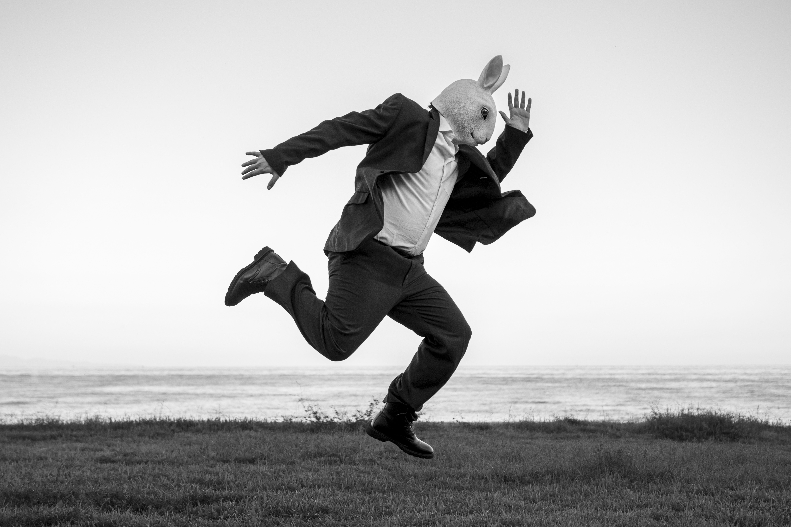
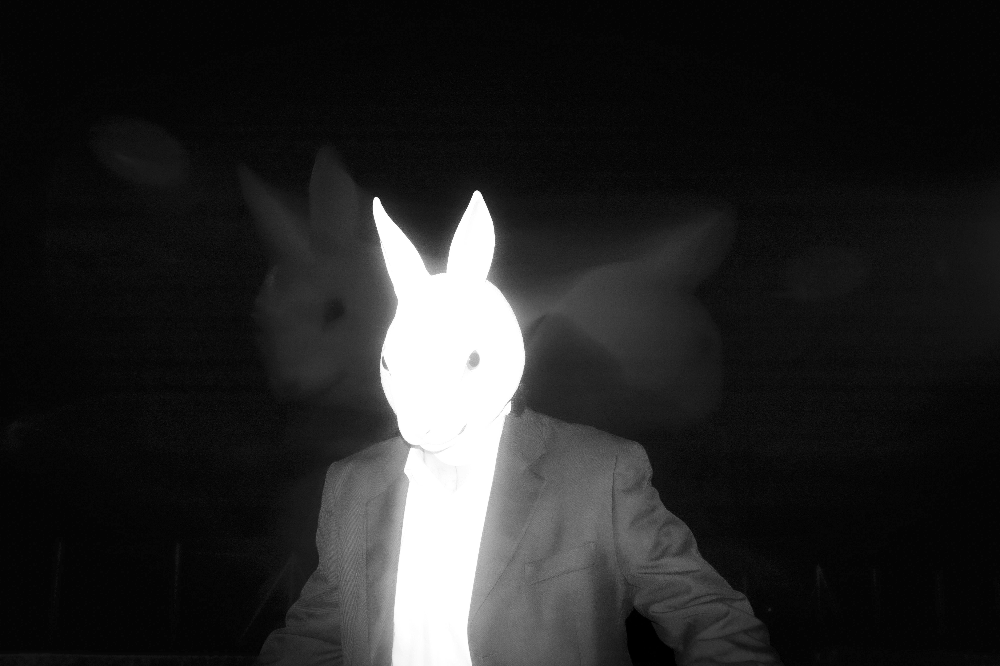

IL SIGNOR CONIGLIO

Questo progetto fotografico nasce dalla memoria di un’idea che ho avuto nei primi anni della mia adolescenza, quando iniziai ad approcciarmi all’arte in modo spontaneo e libero, prima che la mia intensa creatività venisse intrappolata dalle aspettative esterne. Il sig. coniglio è un ponte tra l’inizio e la fine del mio percorso, una riconciliazione con la me che ha sognato l’arte prima di conoscere veramente i linguaggi artistici, una parte di me che ho perso nel tempo quando la scuola ha trasformato l’atto creativo in un compito. L’uomo coniglio rappresenta la libertà creativa pura e istintiva in contrasto con la disciplina e la formalità, ma anche la fragilità e lo scontro interiore del dovere che si scontra con la volontà. Il signor coniglio è un autoritratto concettuale, la trasformazione di una memoria mai realizzata in un'occasione di dialogo con il passato.

